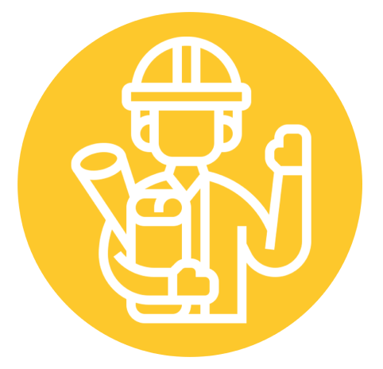

Perusahaan Energi Kelas Dunia yang Perduli Lingkungan
PT Bukit Asam Tbk
Budaya Kerja
Struktur Organisasi
Kerja Cerdas Kerja Keras Kerja Ikhlas Kerja Tuntas

Profil Singkat PT Bukit Asam
Memaksimalkan Inovasi untuk Ketahanan Energi Nasional
Tidak hanya di sektor batu bara saja, sejalan dengan transformasi bisnis Bukit Asam, perusahaan juga membidik kesempatan bisnis baru yakni dengan memasuki bisnis energi baru dan terbarukan yang menandakan peran penting Bukit Asam dalam mendukung ketahanan energi nasional.
Sistem
Pengaduan
E-Procurement
Laporan
Tahunan
Siaran
Pers
Visi
Misi
Menjadi perusahaan energi kelas dunia yang perduli lingkungan.
Mengelola sumber energi dengan mengembangkan kompetensi korporasi dan
keunggulan insani untuk memberikan nilai tambah maksimal bagu
stakeholder dan lingkungan.
Dewan Komisaris
Milestone
Direksi
Irwandi Arif Andi Pahril Pawi E. Piterdono HZ Carlo Brix Tewu Kurnia
Toha
Rahmat Hidayat Pulungan
Arsal Ismail Farida Thamrin Suhedi Suherman Rafli Yandra
Komisaris Utama Komisaris Independen Komisaris Komisaris Komisaris
Independen Komisaris Independen
Direktur Utama
Direktur Keuangan dan Manajemen Risiko
Direktur Operasional dan Produksi Direktur Sumber Daya Manusia
Direktur Pengembangan Usaha
Board of Commissioners
Directors

Hubungi Kami
- Jl. Parigi No.1, Tanjung Enim 31716Sumatera Selatan
- +(62) 734 451 096
- Email: corsec@bukitasam.co.id